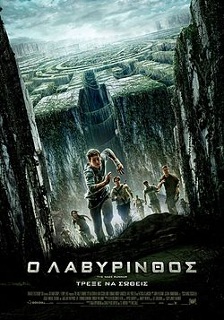

Πτυχίο από το τμήμα Aρχειονομίας, Βιβλιοθηκονομίας και Συστημάτων Πληροφόρησης
Μεταπτυχιακό στη Διαχείριση πληροφοριών σε Βιβλιοθήκες, Αρχεία, Μουσεία
Γνώση Γλωσσών
Άριστη γνώση της Αγγλικής γλώσσας
Άριστη γνώση της Ελληνικής γλώσσας
Καλή γνώση της Γερμανικής
Ψηφιακές Δεξιότητες
Βασική γνώση Η/Y
Βασική γνώση στην Επιστήμη των Υπολογιστών και
Καλή γνώση στα λογισμικά του Microsoft (Word, Excel, PowerPoint)
ΠΡΟΥΠΗΡΕΣΙΑ
Mεταφράστρια σε ηλεκτρονικό μαγαζί
Ιδιωτικός Υπάλληλος
Περιγραφικά
To 2018, δούλεψα ως ιδιωτικός υπάλληλος σε ταχυδρομικό γραφείο μέχρι και το 2020 και στην συνέχεια, αφού έκανα το μεταπτυχιακό μου, δούλεψα προσωρινά ως μεταφράστρια για ένα ηλεκτρονικό μαγαζί χειροποίητων προιόντων.
ΕΘΕΛΟΝΤΙΚΗ ΕΡΓΑΣΙΑ
Εθελοντική εργασία στο ΚΠΙΣΝ στην:
Eξυπηρέτηση Επισκεπτών & Υποστήριξη Εκδηλώσεων
Υποστήριξη Σχολικών Επισκέψεων
Οι δυο αυτές εργασίες έχουν κύρια χαρακτηριστικά τους, την επικοινωνία με τους επισκέπτες και την υποστήριξη των καθημερινών δράσεων. Απαιτείται η δραστηριοποίηση με την εκπαίδευση, τον σχεδιασμό και την εφαρμογή εκπαιδευτικών προγραμμάτων ή την υποστήριξη των σχολικών επισκέψεων.
ΑΓΑΠΗΜΕΝΑ
Αγαπημένα μαθήματα στο Πανεπιστήμιο
Προτυποποίηση Βιβλιογραφικών Εγγραφών
Ιστορία της Τέχνης
Δίκτυα Υπολογιστών
Αγαπημένες δραστηριότητες/σπορ/hobbies
Αθλητικές δραστηριότητες, όπως πεζόπορια και τρέξιμο
Ζωγραφική και sketching
Αγαπημένα βιβλία (και συγγραφείς)
Jo Nesbø
Ο χιονάνθρωπος
George Orwell
Η Φάρμα των Ζώων
Αγαπημένη μουσική (είδη και καλλιτέχνες)
Rock
David Bowie
The Beatles
Alternative
Radiohead
Muse
R&B
DPR IAN
Αγαπημένη ταινία
Unlocked (2023)
Ο Λαβύρινθος

Η σειρά ταινίων "Ο Λαβύρινθος"
Αγαπημένα μέρη (χώρες / περιοχές)
Γερμανία
Μόναχο
Ουγγαρία
Βουδαπέστη
ASCII Art της επιλογής μου
.--. .---. .-.
.---|--| .-. | A | .---. |~| .--.
.--|===| |---|_|--.__| S |--|:::| |~|-==-|==|---.
|%%| | |===| |~~|%%| C |--| |_|~|CATS| |___|-.
| | | |===| |==| | I | |:::|=| | | |---|=|
| | | | |_|__| | I |__| | | | | |___| |
|~~|===|--|===|~|~~|%%|~~~|--|:::|=|~|----|==|---|=|
^--^---'--^---^-^--^--^---'--^---^-^-^-==-^--^---^-'
(Ράφι με βιβλία)